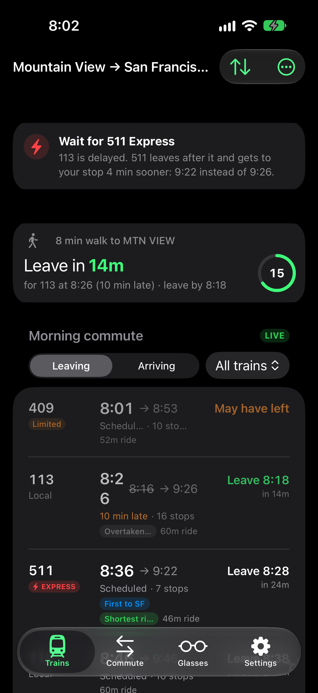
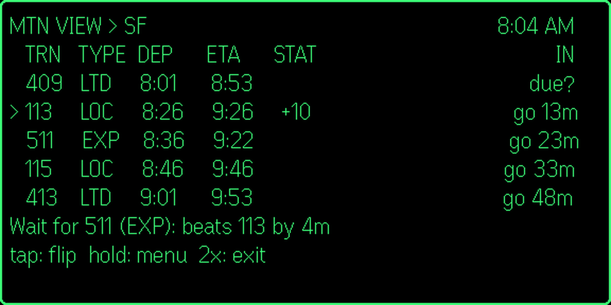
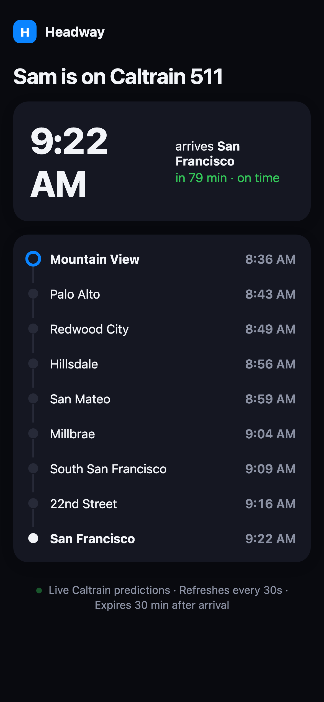

Demo video · finished 2026-11-08
Your next Caltrain, at a glance.
Headway's walkthrough is rendered and ready to upload: 1:58 in 16:9 with six YouTube chapters and a 22-second 9:16 Short. Every product frame is a real recording from the local stack on Caltrain's real Monday-morning timetable, reached with a new dev-only demo clock (no waiting for a weekday): the iPhone app driven tap by tap on the simulator, the Even G2 plugin in the Even Hub simulator, the Live Activity, a pushed alert and the shared ETA page.
/Volumes/proj/github/hejitech-apps/branding/promo-videos/public/headway-demo/.Bugs found while recording (fixed, not yet released)
- Shared ETA links 404 in production.
/eta/*wasn't in the Worker'srun_worker_first, so the static site's "Nothing here" page answered every link (checked on headway.hejitech.workers.dev). Fixed inwrangler.jsonc;test-api.mjsnow opens a shared link. - Share live ETA also stopped tracking. Its button shares a List row with Stop tracking; without a borderless style a tap fires both, which also ended the Live Activity. Fixed in
BoardView.swift. - The Live Activity could fail to reappear. Re-tracking a train updated the activity the app had just ended. It now only reuses an active one, and starts without push updates when they aren't available.
The demo clock (new, local stack only)
PUT /api/dev/clock {"at":"2026-11-09T07:40:00-08:00"}on the local Worker moves boards, alerts, tracking, MCP and the ETA page to that moment;{"at":null}resets. Refused unlessPUBLIC_URLis 127.0.0.1/localhost.- The Debug iPhone app and the glasses plugin read it at launch, so countdowns agree; the Live Activity's countdown is shifted to match.
- The recorder sets it per scene: chapter 1 at Monday 7:30, chapters 3–4 at Monday 8:02.
| Worth knowing | Detail |
|---|---|
| Simulator prompts | iOS shows "Do you want to continue to allow Live Activities from Headway?" under the Live Activity on the Lock Screen in this simulator, even after Always Allow; it's visible in chapter 4. |
| Lock Screen date | The status-bar override can't set the date; the Lock Screen reads "Thu Nov 9" while the trains are Monday's. |
| Pushes | A simulator can't receive APNs: the two alerts are simctl push with exactly the text the alert engine writes for that moment. |
| Not shown | The Apple Watch app (named once as a surface). |
| Integration test | test-api.mjs's "auto tracks when sure" fails at some times of day (it needs a train running now), with or without these changes; the demo clock could make it deterministic. |
The edit: two cuts to review
headway-demo.mp4
headway-demo-short.mp4
| Compositions | headway-demo, headway-demo-short, headway-demo-thumb, headway-demo-short-thumb in branding/promo-videos/src/headway-demo/Composition.tsx |
|---|---|
| Chapters | 0:00 Intro 0:13 1 · When to leave 0:31 2 · On your glasses 0:58 3 · Wait for the Express 1:20 4 · Track your ride 1:47 Recap |
| Pace and camera | One step per narration line; the phone, large, rises from the bottom of the frame and the camera follows each touch from the event log (ripple on taps, spotlight, the step's label beside the phone). Glasses steps name each R1 gesture. |
| Sound | Kokoro af_heart (the promo's voice) at 1.06×; music ducked under the voice; two-pass loudnorm with a peak limiter. Not yet heard by a person. |
Chapters and script
For Caltrain riders, in the order they'd use it: when to leave, the glasses, the express tip, tracking a ride.
Intro
1 · When to leave
2 · On your glasses
3 · Wait for the Express
4 · Track your ride
Recap and end card
The Short
Look and feel
A refined SaaS product film aesthetic: clean hardware floating over rich, warm natural backdrops. Contrasts morning daylight with the sleek high-tech green HUD.
| Typography | Inter for UI and title labels, JetBrains Mono for times, train IDs, and HUD lines |
|---|---|
| Device Frames | A plain dark phone body rising from the bottom of the frame (the camera pans and pushes in on each touch), the Even G2 display green-on-black in a floating frame |
| Transitions | One family: a blur-dissolve between steps and chapters, chapter title cards over each chapter's Flow backdrop; within a recording the camera springs onto each target |
| Captions | KineticCaption bottom band; spoken word highlights white on black with red accent marker |
| What never appears | No AI-generated UI, no feature the recordings don't show; trains are Caltrain's real weekday timetable, only the delays are staged (and said so) |
Flow art prompts
Prompts for Google Flow. All prompts follow the rule: cinematic 35mm photography, subtle natural lighting, high production value, no logos, no text. Download each file into branding/promo-videos/public/headway-demo/.
Flow Generation Settings
Model: Google Flow (Video / Frames). Aspect ratio: 16:9 (1920×1080) for backdrops and opener; 2K still image for end card. Camera motion: gentle slow push-in or subtle horizontal drift.
A1 · Platform at dusk
Cinematic wide shot of a commuter standing on a sleek modern train platform in San Francisco at dusk, electric Caltrain approaching in the background with glowing headlights, high production value, cinematic 35mm film still, warm golden-hour rim light and cool twilight shadows, no logos, no text
B1 · Morning desk & coffee
Minimalist modern desk aesthetic, warm natural morning light streaming across an oak wood surface, coffee cup with subtle rising steam, gentle depth of field, architectural interior photography, serene atmosphere, no logos, no text
B2 · Slate surface with emerald HUD glow
Moody high-tech ambient backdrop, dark slate stone textures illuminated by subtle futuristic neon emerald-green light accents and glowing circuit traces, macro bokeh, clean product design photography, no logos, no text
B3 · Rail tracks night timelapse
Night timelapse of railway tracks curving through the San Francisco Peninsula, blurred streaks of red and white light from passing express trains, cinematic motion blur, deep navy blue and crimson tones, no logos, no text
B4 · Train window reflections
Inside a quiet, illuminated modern passenger train carriage looking out the window at passing city lights at twilight, cinematic reflections on the glass, soft interior illumination, peaceful travel mood, no logos, no text
A2 · Aerial suburban sunrise
Aerial view of a Caltrain electric train gliding smoothly through green suburban California landscape at sunrise, golden sunlight catching the silver roof, smooth gliding camera motion, cinematic drone footage, no logos, no text
A3 · Terminal morning platform
Dawn breaking over San Francisco 4th & King terminal platform, soft pastel sky with rose and gold hues, clean empty platform ready for the morning commute, peaceful and optimistic, no logos, no text
Recordings and screenshots
Recorded 2026-11-08 with scripts/headway-demo-record.mjs: the iPhone 18 Pro simulator driven by scripts/ios-uidriver (XCUITest), the Even Hub simulator, Playwright for the ETA page. The seed rider's commute is Mountain View → San Francisco, an 8-minute walk.
| Clip | Demo clock | What happens |
|---|---|---|
rec-1-commute, rec-1-board | Mon 7:30 | Commute tab (stations, walk); Trains: live board, Leave in 8m for 111 (2 min late), Express 507 marked RUN |
rec-2-pair, rec-2-glasses | Mon 7:32 | Glasses tab → Get a pairing code; G2 board, swipe, tap to flip, hold for the menu |
rec-3-board, rec-3-hud, rec-3-push | Mon 8:02 | Local 113 10 min late: "Wait for 511 Express … 4 min sooner"; the same tip in the glasses footer; the time-sensitive alert |
rec-4-track, rec-4-arrival, rec-4-eta | Mon 8:02 | Swipe 511 → Track; Share live ETA; Dynamic Island; Lock Screen Live Activity; "San Francisco in 5 min"; the shared page |



Re-recording
supabase start; npm run dev:worker -w @headway/web # Worker on 127.0.0.1:8792 R=branding/promo-videos/scripts/headway-demo-record.mjs node $R notifications # once per simulator: fresh install, alerts allowed, Live Activity prompts answered node $R phone1; node $R pair; node $R glasses; node $R late; node $R track; node $R eta node $R restore # headway rows back, real clock
Voiceover and music
| Voice | Kokoro-82M af_heart (the promo's), 1.06×, one file per line; word times from faster-whisper |
|---|---|
| Music | Your Flow Music take from the promo (15-sec-music, 99.4 BPM, 68 s), fitted to 1:58 by MusicBed: its intro, a section repeated on bar lines, its own ending. |
YouTube upload kit
Walkthrough (16:9, Public)
How Headway works: when to leave, wait for the Express, track your Caltrain
Headway shows your next Caltrain on your phone, your watch and your Even G2 glasses: when to leave (walk included), live delays, which train gets you there first, and your ride live on the Lock Screen, with a private ETA link to share. In this video: 0:00 Intro 0:13 1 · When to leave 0:31 2 · On your glasses 0:58 3 · Wait for the Express 1:20 4 · Track your ride 1:47 Recap Headway: https://headway.hejitech.workers.dev Caltrain's real weekday timetable; the delays shown are demo data. Not affiliated with Caltrain. Backdrops are AI-generated (Google Flow); the narration is a synthetic voice (Kokoro).
Headway, Caltrain, commute, Bay Area, train times, Even G2, smart glasses, R1 ring, Live Activity, iPhone, HEJI TECH
| Video | headway-demo.mp4 |
|---|---|
| Subtitles | headway-demo.srt |
| Thumbnail | headway-demo-thumbnail.jpg |
| Altered or synthetic content | No |

Short (9:16, Public)
My Caltrain is late. Should I still take it? #shorts
Headway spots when a later express gets you there first, on your phone and your Even G2 glasses, and pings you before you board the slow one. https://headway.hejitech.workers.dev Delays shown are demo data. Not affiliated with Caltrain. Synthetic narration.
| Video | headway-demo-short.mp4 |
|---|---|
| Subtitles | headway-demo-short.srt |
| Cover (posts) | headway-demo-short-thumbnail.jpg |

Steps, checklist, and risks
- Watch both cuts with soundLaptop and phone.
- Release the fixesThe ETA-link fix (Worker, deploys on push) is urgent; the two app fixes ship with the next TestFlight.
- Upload both (§YouTube kit)Walkthrough with chapters + SRT; the Short.
- Send the walkthrough linkFor the docs page and the landing page.
Your notes
Questions, corrections, decisions. Saved in this browser. Copy summary puts the whole report, your ticks and these notes on the clipboard for any agent.